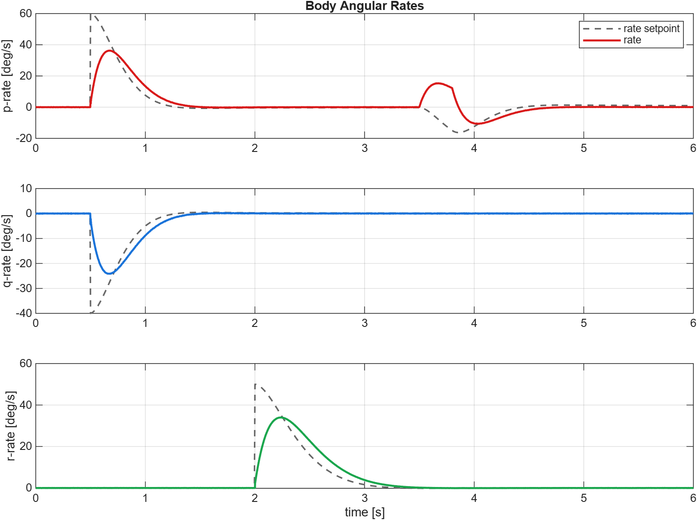
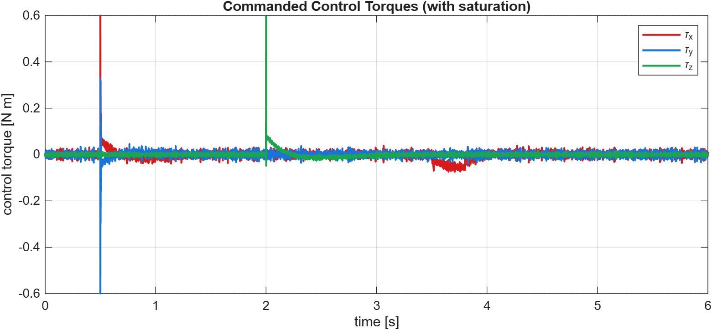

Apr-May 2026
Quadcopter Attitude Controller
Cascaded PID attitude stabilisation with disturbance rejection
A 0.5 m-class quadrotor stabilised by an outer proportional angle loop and an inner PID rate loop, with gyroscopic feedforward, actuator saturation and anti-windup. Tuned to a crisp, low-overshoot response and tested against a torque-pulse disturbance.
Highlights
- Rise time 0.45 s, settling 0.69 s, overshoot 1.2%, steady-state error 0.07°
- Disturbance pulse (0.05 N·m) recovered to <0.5° in 0.80 s
- 1 kHz fixed-step RK4 plant with rate-gyro noise and ±0.6 N·m saturation
- Interactive 3D viewer driven by the simulated attitude
Interactive 3D
Results & figures

